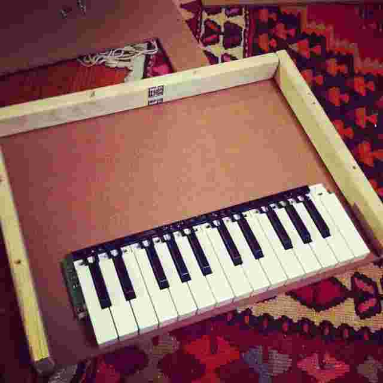
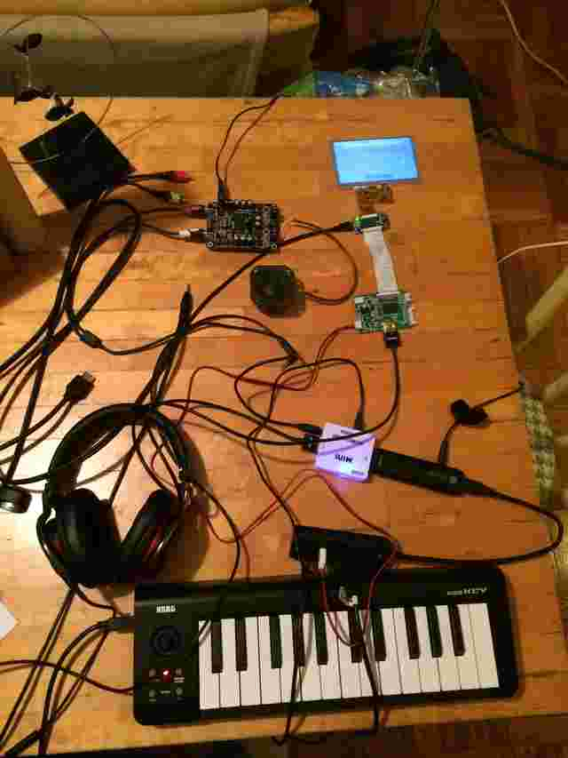
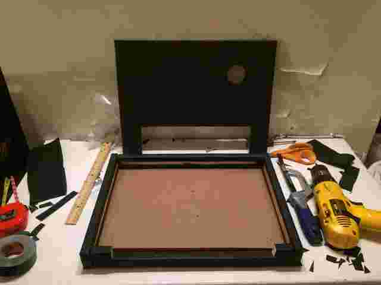

Schroeder
DIY Electronic Piano using ChromeOS
Schroeder is a hardware music keyboard built on a web stack. Below is a photo album of its development.

The project slumbered for over a year. In January, 2015, IRCAM held the first Web Audio Conference.

